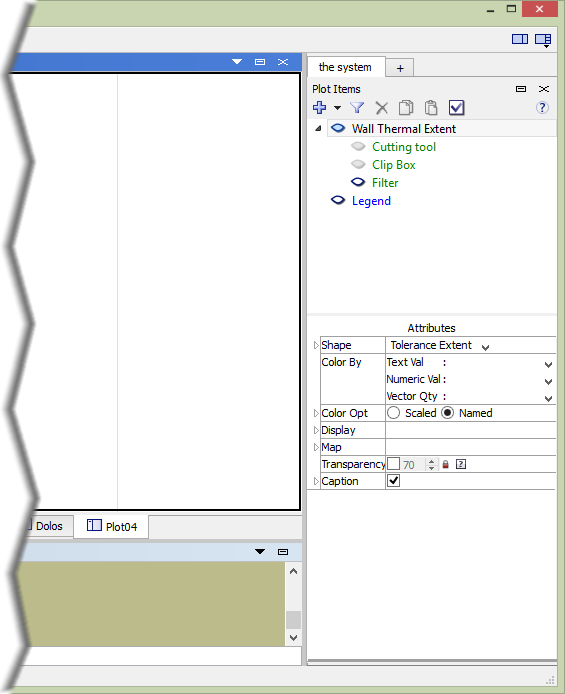

控制面板


图 1：PFC 右侧剖视图。控制面板 显示在右侧。点击可在独立窗口中放大。
控制面板是出现在主程序窗口右侧的一个矩形区域。与工具栏（toolbar）一样，它是一个上下文相关的元素：其内容由活动的窗格类型（pane type）决定。
与窗格不同，它不能被浮动或停靠。不过，可以使用出现在工具栏右端的按钮（显示/隐藏控制面板 ）将其隐藏。与该按钮相邻的按钮（显示/隐藏控制集 ）是一个下拉菜单，用于控制在控制面板中显示哪些控制集。
控制集是一组分组排列的工具或功能，为在窗格中工作提供各种设施——这些设施通常比能轻松置于工具栏上的设施更复杂或更庞大。控制面板可以显示零个到n个控制集（可显示的数量随活动的窗格类型而变化）。在介绍六种窗格类型用法的各节之后，有一节介绍PFC中控制面板的用法（use of the Control Panel）以及其中可能出现的控制集。
控制面板选项卡
控制面板始终至少显示一个选项卡。该选项卡的标题是当前活动窗格的名称。当按钮出现时，按下该按钮即可添加新选项卡。当当前窗格类型只有一个可用的控制集时，此按钮不可用。多个选项卡有助于组织将随当前窗格一起使用的控制集。每个这样的配置都是唯一的，并且与定义它们的窗格相关。
| 这些内容对您有帮助吗？… 版权与免责声明 | FLAC3D © 2019, Itasca | 原文更新于 2020 年 10 月 8 日 |